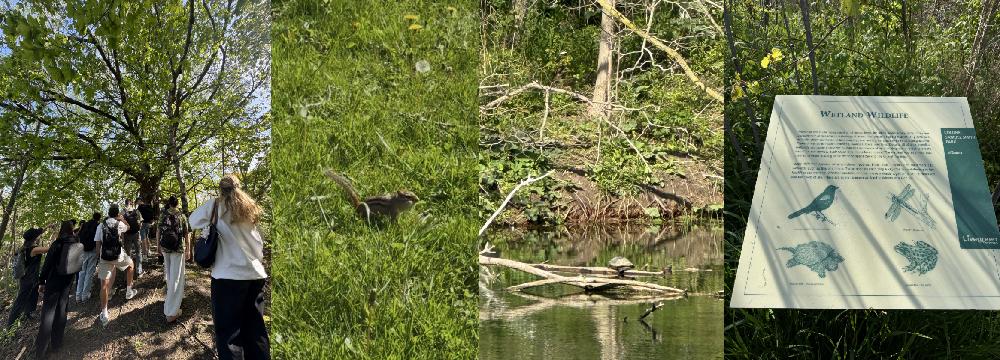
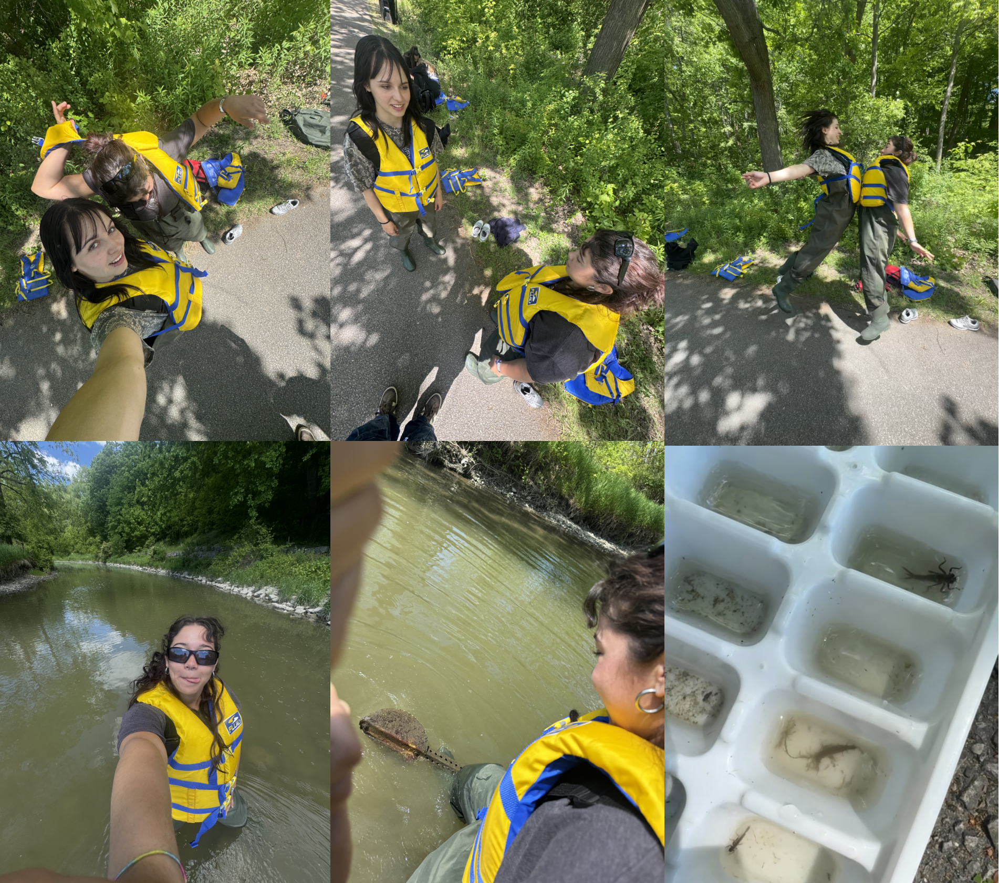
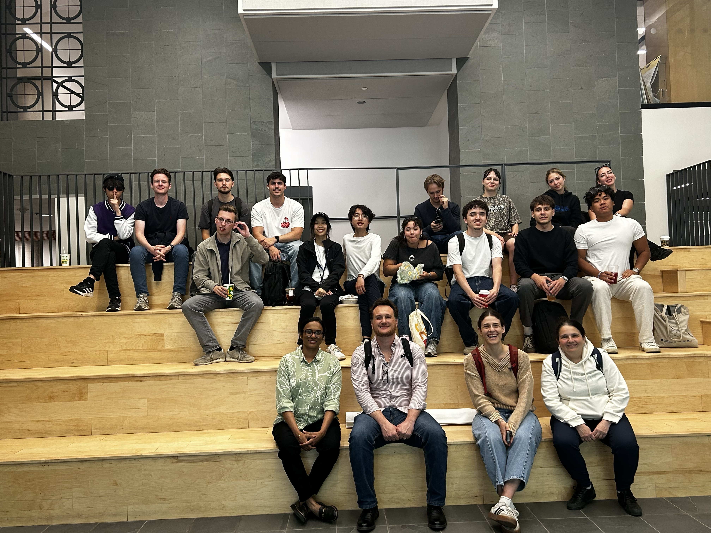
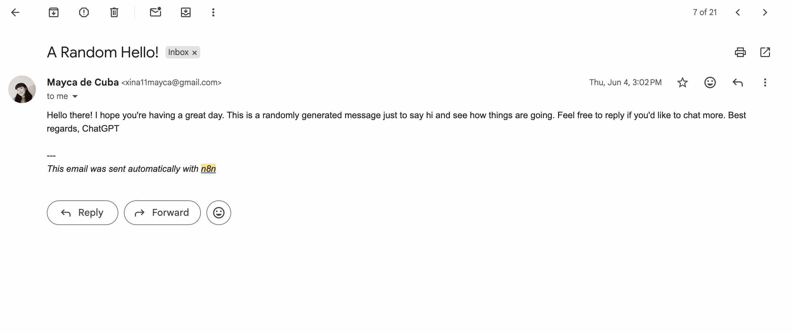
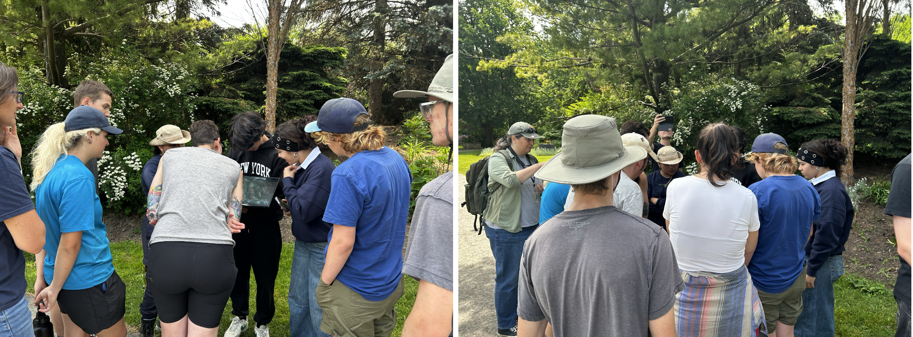
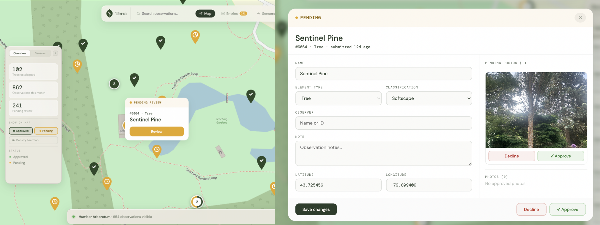

Artificial
Intelligence
✦ Toronto, Canada · May–June 2026
Week 1
Deliverables
- Turtle Walk
- Introduction to AI & Machine Learning
- Machine Learning and Deep Learning
- Data Engineering for AI
Turtle Walk
We kicked off the module at the Lakeshore Campus where we presented our progress to stakeholders. Afterwards, Jen introduced us to Indigenous history and invited Carolynne, an Indigenous knowledge keeper and member of the Turtle Clan, to take us on a walk of the land.
Meeting an actual snapping turtle during the walk made the experience unforgettable. For Carolynne, protecting turtles is not just a cultural value, it is tied to her identity as a member of the Turtle Clan. In many Anishinaabe and Haudenosaunee traditions, your clan defines your role in the community and your relationship with that animal. She also took this turtle after the walk.
This introduced me to the concept of "All Our Relations", a core Indigenous philosophy that sees everything as connected: humans, animals, plants, water, land and the spiritual world are all part of one living web. The walk was not a nature tour, it was a lesson in seeing the land as a living relative, not a resource.
We also learned about Terra Nullius, the legal doctrine colonizers used to declare Indigenous lands empty and ownerless, justifying the seizure of land and the erasure of cultures. Coming from Aruba, a place that was also colonized, this resonated with me. It is something that is rooted in my own history too.
Both concepts reminded me that as future IT professionals, we have a responsibility to build things that do not repeat those same patterns of erasure and exclusion.

Introduction to AI & Machine Learning
Our second day was dedicated to an introduction to Artificial Intelligence, Machine Learning and Deep Learning, led by Dr. Ibrahim Tamim.
The lecture started by contextualizing AI in everyday life, from healthcare and self-driving cars to finance, cybersecurity and even video games. What struck me was how present AI already is in things we don't really pay attention to.
We also explored the origins of AI, going back to the Dartmouth workshop in 1956 where the term "artificial intelligence" was first coined, and even earlier to Alan Turing's foundational question: "Can machines think?" We also learned about the evolution of processing power and data transfer speeds, which helped me understand why AI has only really exploded in recent years despite the ideas being much older.
From there we dove into the three layers: AI as the broad field, Machine Learning as a subset that learns from data, and Deep Learning as a further subset using neural networks. The distinction between supervised, unsupervised and reinforcement learning was also covered.
What I particularly appreciated was how Ibrahim delivered the content. Coming from a background in design with no prior technical knowledge of AI, I was a little nervous going in. But he explained everything in a way that was genuinely easy to follow. He kept it interesting throughout the entire lecture, never losing my attention, which is not always easy with such a dense topic.
Side Quest
Later that day we stepped away from the classroom for an outdoor exploration with Jen and Lynn River. We went on a nature walk where we learned about the trees, local animals and the lake surrounding us. We spotted squirrels, birds and a turtle again, which after learning about Carolynne and the Turtle Clan the day before, felt a little more meaningful. It was a nice balance to the more technical parts of the day and a good opportunity to connect with the environment and with each other outside of a classroom setting.

Data Engineering for AI
On the last day of the week we had a lecture on data engineering for AI, led by Professor Parisa. This session was all about learning how to actually prepare and manipulate datasets before feeding them into a machine learning model, which is one of the most important steps in the whole AI pipeline.
We worked with Pandas, a Python library built for data manipulation. We started with the two core structures: a Series, which is essentially a labeled one dimensional array, and a DataFrame, which is a two dimensional table with named rows and columns. Most real world datasets come in the form of a DataFrame.
The main thing Professor Parisa wanted us to internalize was that preparing a dataset follows a repeatable workflow. The same set of steps every time a new file lands on your desk, before you ever feed it to a model. It is basically a "load it, look at it, clean it" loop:
- Load the data. Always start by reading the file in, telling Pandas that the first row holds the column names rather than data, and assigning it to a variable (usually df).
df = pd.read_csv("mtcars.csv", header=0) - Inspect it. Before touching anything, get a feel for what you are holding. This is the "look before you leap" step, making sure nothing came in broken.
df.head() # first 5 rows df.shape # (rows, columns) df.dtypes # data type of each column df.columns # column names
- Handle missing data. Real datasets almost always have holes (NaN values). First you find where they are, then you decide whether to drop the incomplete rows or fill them in, either with a constant, a per column value, or something smarter like the column average.
df.isnull() # map of where the NaNs are df.dropna() # remove rows with missing values df.fillna(df.mean()) # fill NaNs with the column average
- Select and reshape. Now you shape the data into what you actually need, selecting specific rows and columns by label, renaming columns, dropping the ones you do not want, and creating new derived columns.
df.loc[1:5, "disp":"wt"] # select rows/columns by label df.rename(columns={"old": "new"}) # rename columns df.drop("col", axis=1) # drop a column df["new_col"] = df["col"] / 2 # create a derived column - Sort and combine. Finally, you order the data and, if it came in separate pieces, stitch the multiple tables together.
df.sort_values(by=["col"]) # sort the data pd.concat([df1, df2], axis=0) # stack tables top to bottom
The key idea was that this process is the same five moves every single time, which made it feel a lot less intimidating. Instead of seeing data preparation as a messy, unpredictable task, I started to see it as a clear routine you can rely on.
It was a very practical session and felt like a natural continuation of everything we had been learning throughout the week. By the end I had a much clearer idea of what it actually takes to get data ready for AI.
I also added color to the tables in my file to understand the distinction better (still a UX student lol).
Machine Learning and Deep Learning
We further deepened our understanding of Machine Learning with a second session led by Ibrahim. This time the focus was on data and the different types of ML.
We started by understanding what data actually is and how central it is to everything in AI. Without good data there is no good model. We looked at the difference between structured data, unstructured data and semi-structured data, and learned how to read a dataset, identifying variables, rows, dependent and independent variables, and categorical versus numerical types.
From there we went deeper into the three categories of Machine Learning: supervised learning, unsupervised learning and reinforcement learning. The one that stood out most to me was supervised learning, where the model learns from labeled data to make predictions. We saw real world examples like disease diagnosis, loan approval, house price prediction and sentiment analysis, which made it much easier to understand how these models actually get used in practice.
Alongside the theory we also completed Lab 1 and practiced linear regression using a salary dataset that was provided to us. During this part I mainly followed along with Ibrahim, focusing on understanding the basics rather than diving too deep into the code. So far everything was understandable and I felt like I was building a solid foundation. The next day we would go further and get more hands on practice with preparing datasets for use in AI.
Week 2
Deliverables
- Exploring in the Humber River
- Guest Speaker
- Computer Vision
- Creating AI Agents
Exploring in the Humber River
So on a bright and early Monday morning we had the lovely opportunity to go INSIDE of the Humber River. Now many of my classmates did not want to, but I WAS EXCITED!
We got to wear these funny minion looking costumes and basically we had to collect tiny critters in the river and distinguish them to see if the river is healthy. It turns out the little creatures living in the water can tell you a lot about how healthy the river is, so finding certain ones can be a good sign, and finding many of others can mean a bad sign. I forgot all the names for these creatures, but we were helping them collect data for the river, so Jen and Mike were very grateful for our participation.
It was such a fun experience and a nice change from sitting in the classroom.

Machine Learning for Environmental Research
We had the opportunity to hear from a guest speaker, Heinz, who shared how he and his team applied machine learning to an ongoing research project in an area that, according to the people living there, was contaminated.
The challenge was that even though the community was certain something was wrong, the contamination itself was incredibly hard to locate. It had been there for a long time, caused by an old dump site, but the contaminated area underground kept shifting and moving over time. This made it almost impossible to pin down exactly where it was or what it consisted of. The main reason people knew something was wrong was because of the human cost: high rates of sickness, cancer and other health problems in the area.
The people had a lot of data, but no way to actually visualize it, since the contamination was always moving and changing. This is where machine learning came in. Heinz and his team have been working on this research for five years, and they were finally able to visualize the contamination and deliver the results to the community.
Unfortunately, the project is still ongoing. Even with the contamination now mapped out, they are still unsure of what solution to bring, and finding one will probably take years. But thanks to machine learning, that process could be a lot faster than it would have been otherwise.
Overall it was a really interesting topic. What stood out to me most was the human side of it. These people know the area they live in is slowly killing them, but they cannot do much about it, since they live there and moving away would be far too expensive. It was also great to see how many people are involved in projects like these, coming together to help a community that reached out to them. Seeing AI being used for something that genuinely helps people was really nice to witness, and a good reminder of what this technology can be used for.

Computer Vision
This lecture introduced us to computer vision, the field focused on getting computers to extract meaning from images and video, the way our eyes and brain do automatically. That "meaning" can be a label like "this is a cat," a location like where the cat is in the frame, or even a full description of the scene. The thing that stuck with me was the core challenge: to a computer, an image is not actually a picture, it is just a grid of numbers. The whole field is essentially about turning that grid of numbers into something useful.
I will be honest, this was a very difficult subject and the hardest topic for me to grasp out of everything we covered during the module. What helped was seeing how it connected back to the data engineering we had learned with Professor Parisa, since an image is really just numbers in a different shape, and preparing images follows a similar load, inspect and clean routine before a model ever sees them.
We then looked at the core tasks in computer vision, roughly in order of difficulty. Classification answers "what is in this image?" with a single label for the whole picture. Object detection answers "what is in this image, and where?" by drawing bounding boxes around each object. Segmentation goes even further, labeling every single pixel as belonging to an object or not, outlining the exact shape rather than just a box. More specialized tasks like face recognition and pose estimation are versions of these.
We also touched on convolutional neural networks, or CNNs, which are what allow models to actually "see" by scanning an image in small pieces to pick out patterns. I will admit this part was pretty confusing for me and is something I would need more time to fully understand.
To put the theory into practice, we worked through a hands-on lab with Professor Weijing Ma using OpenCV and MediaPipe. We started with basic image manipulation, getting comfortable with the idea that an image really is just an array we can slice and change. We then moved on to color detection, where I learned why a color space like RGB is not always the best choice for isolating a specific color and how switching to a different color space makes the task much easier. The final part was pose detection using MediaPipe, which can identify 33 different body landmarks like shoulders, elbows and knees from a video feed in real time.
I did not get enough time to fully finish the lab exercise, but it was really nice to see what computer vision is already being used for in day to day life, like workout apps that track your form or self driving cars. I always wondered why it was so hard for AI to classify or generate images, and after this lecture I finally understood why. It is just so complicated, lol.
Creating AI Agents
In this part of the module we explored how to build AI agents using n8n, a workflow automation tool that lets you connect different apps and APIs together without having to code everything from scratch.
We learned how to connect APIs from different services and chain them together into automated workflows. For example, we built agents that could pull the latest stock news, and others that could send emails to ourselves automatically. It was eye opening to see how you can stitch together different tools and let an agent handle a task from start to finish on its own.
What I took away from this was a much better understanding of what people actually mean when they talk about "AI agents." Rather than a single model doing one thing, it is about connecting multiple services and letting them work together to complete a goal, like gathering information and then acting on it.
Unfortunately I am not able to show my workflow here, as my n8n subscription has since run out and I can no longer log in to access it. But the concepts I learned about connecting APIs and automating tasks with agents are something I would definitely like to explore more in the future.

Week 3
Deliverables
- AI Infrastructure
- Project Testing, Feedback & End Users
AI Infrastructure & Responsible AI
This lecture focused on the physical backbone that makes modern AI possible and the principles that should guide how it is used. We learned how AI infrastructure differs from traditional IT, shifting from CPUs to GPUs and TPUs, running massively in parallel and needing far more power and cooling.
We covered the three things that drive AI: compute, data and algorithms, and how AI can be pictured as an iceberg, where users only see the apps at the top while the models, hardware and data centers stay hidden underneath. On the technical side we looked at why GPUs are so important for AI, since the math behind it is highly parallel, and I was surprised to learn that memory is actually the biggest bottleneck in AI hardware. This is also a big reason why GPUs are so expensive these days, since the demand for them in AI is huge.
The second half shifted from "can we build it" to "should we, and how." We learned the difference between ethical AI (the broad principles like fairness and privacy) and responsible AI (actually putting those into practice through transparency, accountability and compliance), and looked at the environmental cost of AI, from its huge energy use to the water needed to cool data centers.
What stuck with me most is that AI is not just clever algorithms. It sits on top of an enormous, expensive and energy hungry physical foundation, and that scale is exactly what makes responsibility and sustainability so important.
GPU Infrastructure Lab
In this lab we connected to a real GPU in Google Colab and ran some experiments in PyTorch. I will be honest, I mostly followed the steps without fully understanding every line, but the main point still came together for me.
The lab compared how long the same task took on a CPU versus a GPU, and the GPU was much faster, around 24 to 48 times. Seeing that made it click: GPUs can do thousands of small calculations at once, which is exactly what AI needs. I also watched the GPU memory fill up, which showed me why memory is such a big bottleneck.
Project Testing, Feedback & End Users
Towards the end of the module we showed our product to landscaping students to get their feedback, since they represented our actual end users. We walked them through our mobile app and dashboard, and Aidan demonstrated how to add a tree, as well as showing off the AI feature he created that can identify a tree.
The response was mostly positive, which was really encouraging to hear after all the work we had put in. They also gave us some thoughtful suggestions for features that would be nice to have. These included:
- The ability for a visitor to report something wrong without it being an existing entry, and have it show up on the map
- A set of guidelines on the home page, like "pick up your trash" and "don't pick flowers"
- A filtering option to see if a plant appears in different areas
- Slightly bigger fonts and improved colors for readability
- Labels for each entry, such as "invasive" or "rare," along with the ability to create new labels
- Adding stress test data to demonstrate that our application can handle a heavy load during the final presentation
Unfortunately, with only two days left, we were not able to implement some of these. Even so, it was really valuable to hear directly from the people who would actually use the product, and these suggestions are something that could easily be picked up and built on by future students carrying the project forward.

If you look behind Aidan in the first picture you can spot the tree we used as a demonstration.

Reflection
Deliverables
- Personal Reflection
Personal Reflection
Overall, I had a great experience in Toronto, at Humber, and during this project. I remember at the start I did not even know what an arboretum was, and here I actually got to experience one for myself.
I also remember my first reaction to the project being something like "ew, a project about the health of trees, I know nothing about trees." But after being here and seeing how much people care about their trees, my whole perspective shifted. It was genuinely inspiring. I love that people love their trees so much that there is an entire field of study dedicated to landscaping and caring for them. It completely changed the way I think about it, and I take back my initial judgment.
It was not only the trees, but the history of the land in general. It was very educational to learn about the colonization that happened on this land and how it still affects it to this day, like the highways being a danger for turtles or the health of the river possibly declining because of pollution. These are all things that came with colonialism in the past, and it was eye opening to see how that history is still connected to the environment now, as well as how deeply it affected the original people of this land.
As for the IT topics, my goal in each module has always been to take away something new that I could apply in my later studies. I think I learned more in this module than in all the previous ones, thanks to the great structure and all the professors involved. Some of the main things I took away were the different types of machine learning, how to prepare data, and how to test AI models. I also learned just how expensive and costly it is to run these big models, and that there really should be governance soon around how AI is used. Coming from knowing basically nothing about AI, I now feel like I have a solid foundation to build upon, and more importantly, one that I am genuinely interested in building upon. AI is such an upcoming field, and it is in our hands to control how it continues to grow. This module really caught my interest, and AI is definitely something I would like to study further.